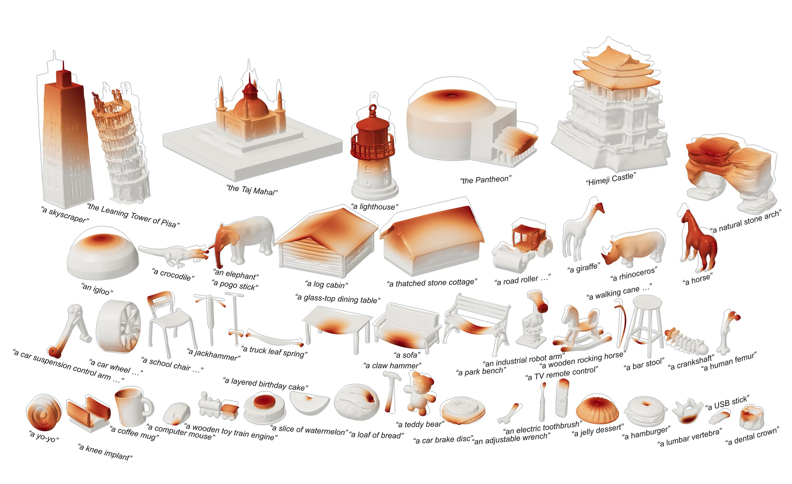
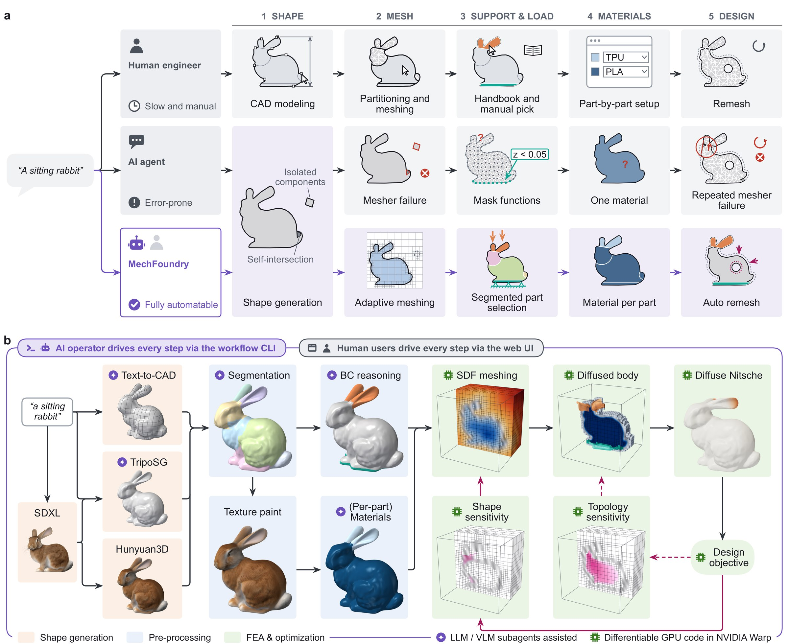
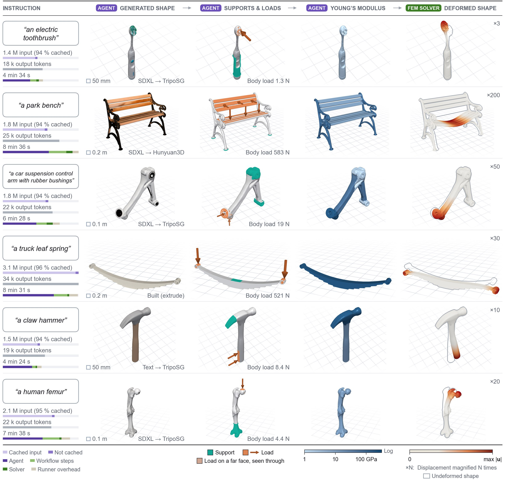
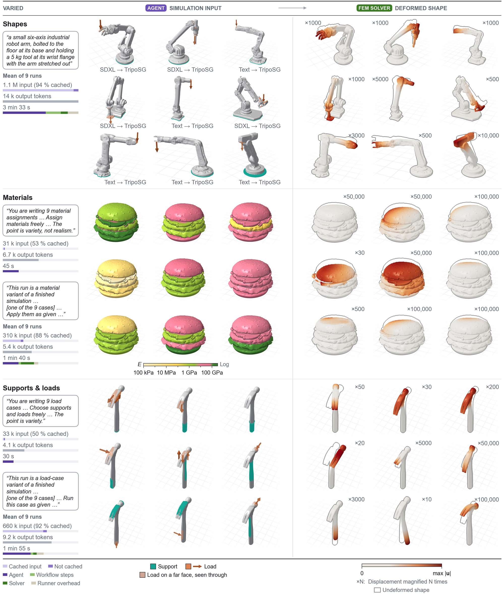
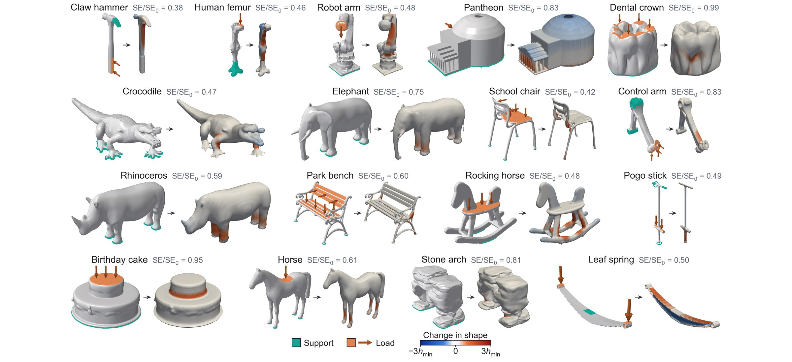
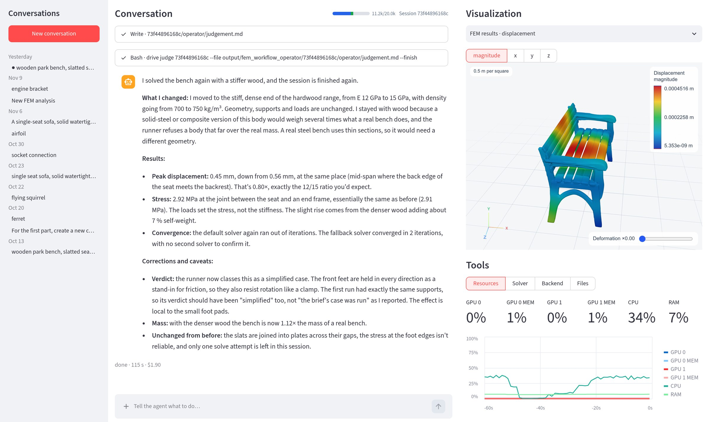
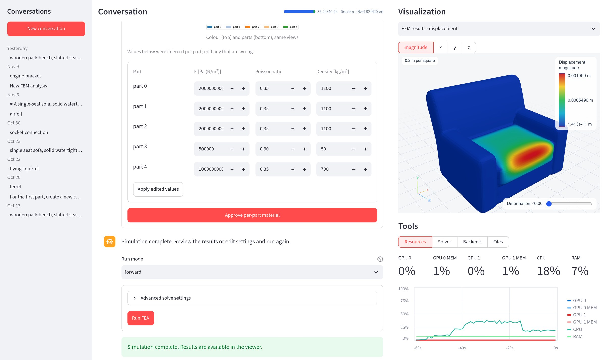

MechFoundry: An agentic loop that poses and performs engineering analyses and optimization of real-world objects
The operator receives the prompt “simulate a park bench”. It generates the shape, segments it into parts, poses supports and loads, assigns materials and solves the nonlinear response. The design can then be optimized for load-carrying ability.
Abstract
AI agents can automate software engineering because a compiler or a test suite checks that the code does what the user or the agent intended. In engineering analysis, however, the steps that precede the computation have few easily verifiable checks: modeling a design or an object, deciding how it is used, where supports and loads are applied, and what material each part is made of. A human expert therefore makes these decisions, carries out the steps, and judges the result, one object at a time.
We present MechFoundry, an agentic loop coupled with bespoke software that automates structural analyses of real-world objects without a human in the loop. From an object’s lexical description, it generates a shape, poses a loading case relevant to how the object is used, assigns a material to each part, solves the nonlinear structural response, and improves the design against the loads it carries. A differentiable GPU solver built on an adaptive octree that need not conform to the surface enables the transition from shape generation to simulation and optimization. Across 50 everyday and engineering objects, the agent posed and solved a loading case in 6.5 minutes and for US$1.3 per object on average. Without a test suite to check against, we had language-model reviewers grade each session, as a first indication of where the agent’s engineering judgment holds and where it fails.
Fifty objects simulated from short descriptions
We gave the AI agent operator only a short description of each object, such as “a park bench”. The operator follows an operator skill, a set of generic instructions, reference material and scripts written for the role of an engineer, and runs the workflow without further input. A session took 6.5 minutes and cost US$1.3 at API price on average.

The 50 objects come from 10 categories, from household items to landmarks, and each was run by Claude Code with Opus 5.5. Color shows the displacement magnitude, and the gray outline is the undeformed shape.
A workflow that an AI agent can run end to end
Generated shapes often have disconnected pieces and self-intersections, which conventional tetrahedral meshers reject. They also have no CAD faces for placing loads and are not divided into parts. MechFoundry stores each shape as a signed distance field on an adaptive octree that does not have to follow the surface, and segments the surface into parts. Support and load regions can then be selected by part, position or facing direction, and each part can have its own material.

a, The five steps of a simulation of “a sitting rabbit”, done by an engineer (top), by a general-purpose agent writing its own scripts (middle, illustrative) and by MechFoundry (bottom). b, The MechFoundry workflow. AI subagents propose the supports, loads and materials, and the differentiable diffuse Nitsche solver runs on an adaptive octree in NVIDIA Warp.
Six sessions in detail
Each row is one of the 50 autonomous sessions, and the columns follow the order of the work. The operator first wrote a case brief stating how the object is used, where it is held, what loads it and how large each load is. It then picked a route for generating the shape. AI subagents proposed the support and load regions and a material for each part, and the operator approved or edited each proposal after looking at the rendered result. Last, it checked the solved deformation.

Columns: the session’s tokens and wall-clock time, the generated shape, supports (teal) and loads (orange), per-part Young’s modulus (log scale), and the deformed shape (magnified by the factor at the upper right).
Grades from language-model reviewers
We ran each of the 50 objects once with each of three operators, Claude Haiku 5.5, Sonnet 5.5 and Opus 5.5. There is no test suite for a loading case, so two panels of language-model reviewers graded the sessions. One panel had three Claude Fable 5.1 agents, from the same model family as the operators, and the other had three GPT-6-Astra agents. The reviewers saw each session’s figures, report and files without the operator’s name, and graded the geometry, the supports and loads, and the materials as high, moderate or low against fixed criteria. No human graded the sessions. Each bar shows the majority vote of a panel, or the median when all three reviewers differ. Cohen’s kappa between the two panels was 0.19–0.25, which is slight to fair agreement.
Number of the 50 objects at each grade. Haiku 5.5 did not finish 4 sessions; in three of them some settings were never produced and could not be graded (gray).
Operator cost per session (US$ at API price, log scale; one dot per object)
The operator’s cost for each of the 50 sessions, excluding the AI subagent calls inside the workflow (usually under US$0.02 per object). The vertical tick marks the median.
Several simulations of one object
We gave the operator the same robot-arm instruction nine times. Each session used a different generation seed and chose its own generation route, so the nine arms differ. For a hamburger, we asked the operator to write nine material assignments in one request, and for a claw hammer, nine sets of supports and loads. Each case was then solved with the same workflow. Such a variation of a finished session costs less than a new session started from a short description.

Rows: nine robot arms, nine material assignments for a hamburger and nine loading cases for a claw hammer. Left: the instruction and the mean tokens and time per session; for the hamburger and hammer, the request that wrote all nine cases (top) and the mean per run (bottom). Middle: inputs set by the operator (Sonnet 5.5). Right: deformed shapes.
Shape and topology optimization with a differentiable solver
The solver is differentiable. Automatic differentiation and the adjoint method give the gradient of a design objective with respect to the shape. Shape optimization moves the surface, and topology optimization can also open new cavities inside the body.
The table starts as a rough design, held at its four feet and loaded on its top, and is optimized toward half of its initial volume with the lowest strain energy at that volume. Shape optimization took 101 iterations and 4.0 min, and topology optimization 91 iterations and 3.9 min, on one NVIDIA RTX A6000 GPU.
Refining the generated shapes under their own loads
We also ran a short shape optimization on all 50 generated bodies, each under the supports and loads chosen in its session and with one volume-averaged material. The objective lowers the strain energy and penalizes growth in volume. Each run stops before the surface moves more than a few of the finest octree cells, so the object keeps its appearance. The figure shows the 17 bodies that changed noticeably.

Left of each pair: supports (teal) and loads (orange) posed by the agent. Right: change in shape from −3hmin (blue, material removed) to 3hmin (red, material added), with hmin the finest octree cell size. SE/SE0: strain energy relative to the generated body; lower is stiffer under the same load.
A web interface for users and AI agents
The workflow also runs in a web interface. The left column lists past conversations, the middle column shows the conversation with an approval gate at each step, and the right column shows the current result in 3D and the GPU, CPU and memory use. A person can answer each gate by hand, or start an agent session in which Claude Code runs the same steps and reports back.

Agent-operated: a park bench, with the agent’s report.

User-operated: a single-seat sofa, with the per-part material card, where the values proposed by the AI subagent can be edited before approval.
Diffuse Nitsche compared with body-fitted finite elements
The diffuse Nitsche method solves on an adaptive octree of hexahedral cells that does not follow the surface, so its solution can differ from that of conventional finite elements on a mesh that does. We therefore solved each session again on three body-fitted meshes of linear tetrahedra built with TetGen, with the same Newton solver in NVIDIA Warp on the same machine. TetGen could not mesh three generated surfaces because they intersect themselves, which leaves 47 objects. Both solutions used double precision, a tight Newton tolerance and one averaged material per object. Linear tetrahedra are stiffer in bending than the trilinear hexahedra of the octree, so part of the difference comes from the element type, and neither solution is an exact reference.
Accuracy: displacementDiffuse Nitsche vs. each body-fitted mesh, relative L² difference (%)
Accuracy: displacement and its gradientDiffuse Nitsche vs. each body-fitted mesh, relative H¹ difference (%)
Efficiency: preparation time (s)
Efficiency: solve time (s)
Bars are medians over the 47 objects that TetGen could mesh, or all 50 for the diffuse Nitsche times. The matched-DOF mesh has as many nodes as the octree, the matched-surface mesh uses the finest octree cell size throughout, and the graded mesh is fine at the surface and coarser inside. Some body-fitted solves at level 8 ran on the CPU, because their meshes did not fit in GPU memory or the GPU solve failed.